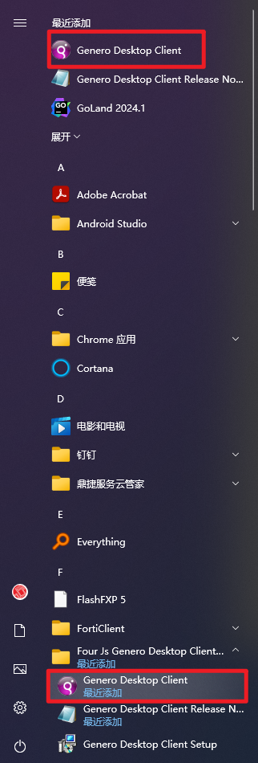
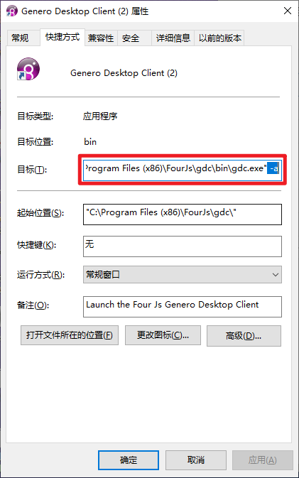
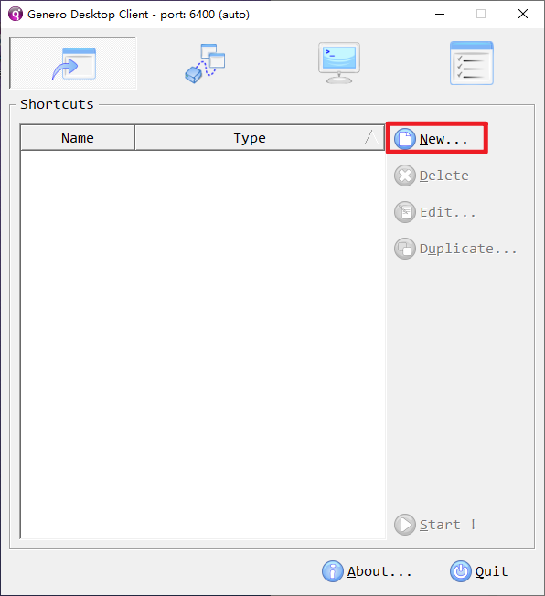
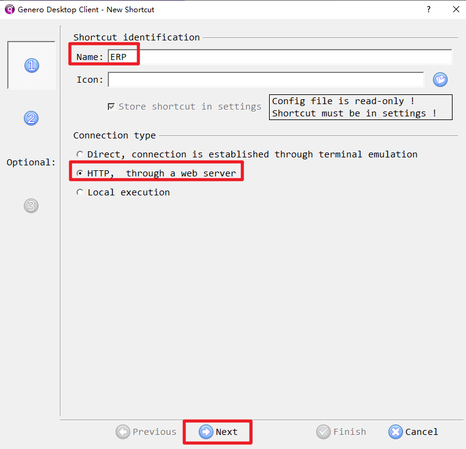
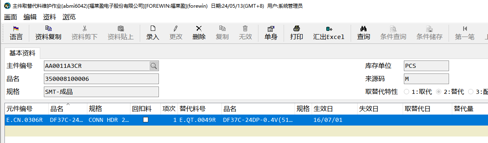
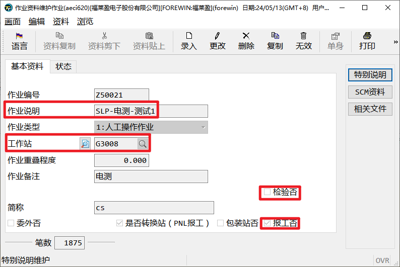

-
工单修改是否报工
-
工单删除完工、报废记录
账号管理
ERP账号申请


申请账号必须提供的信息：
-
申请的账号编号（即工号）
-
账号的姓名与部门
-
申请的权限
其中申请的权限描述请参考以下案例：
-
申请52948erp账号，姓名：李晓伟，部门：IT，权限：一般文员
-
申请52948erp账号，姓名：李晓伟，部门：IT，权限：参考账号52900权限
-
申请52948erp账号，姓名：李晓伟，部门：IT，权限：申请录入采购单apmt420、料件查询aimi100、杂项发料单aimt301录入权限
忘记密码
密码忘记
连续输入10次错误密码，账号将被锁定，无法登陆

在BPM系统账号权限申请账号重置密码
ERP登陆软件安装
软件位置
ERP软件安装地址为：\192.168.1.252\部门dpt\IT\ERP\APP\fjs-gdc-2.40.21-build4635.80-w32vc90.exe
如果无权限打开，需要请IT人员安装。
安装过程


这个时候开始菜单已经增加以下软件图标

配置ERP地址
将快捷方式放到桌面
右键打开图标文件位置

右键/发送到/桌面快捷方式


增加参数 -a
右键快捷方式图标，打开属性面板

在目标后面输入” -a”，**-a之前有一个空格，**确认后即可配置

配置登陆地址
打开ERP登陆软件，将安全性设置为最低，防止每次连接ERP时弹窗

点击新增配置

name 按照自己喜好命名

在url中输入地址”https://192.168.1.19/gas/wa/r/gdc-tiptop-udm-intranet”，输入完后点击完成

双击新出现的配置地址，或者选中点击Start

出现下面界面输入已申请好的ERP账号密码，登陆即可。


ERP作业价绍
标题
菜单区
状态栏
弹窗
模组与作业编号
模组
作业编号
查询作业
作业类型
T—交易作业
I—基础资料维护作业
Q—查询作业
R—打印作业
S—参数作业
P—批量作业
首页功能介绍
菜单
修改密码
我的最爱
常用程序
帮助文档
运行程序的几种方式
首页输入作业编号
我的最爱
开窗录入查询条件
模糊查询
匹配任意一个字符
匹配任意多个字符
比较大小
日期范围
不等于某个值
开窗录入
必要字段检查
复制上笔单身
保证字段顺序一致
有下拉框栏位无法excel导入
默认浏览器设置
强制使用IE浏览器
查询
录入
修改
删除
下一个栏位
确定
取消
开窗
选择
什么是料件
料件是企业在生产、经营过程中用到的材料、物品的总称。
根据用途分为以下几类：原材料（生产用到的材料）、半成品（生产过程中的中间物）、成品（生产的最终产品）和其它（办公用品、备品、固定资产等不直接参与生产的料件）。
在ERP几乎每一个模块中都会使用到料件，采购、销售、财务会计、生产、库存管理、产品设计等都是围绕料件而产生的管理活动。
对于设计人员，在ERP中最终产出物是产品的BOM与工艺资料。
我们最先知道是成品料件的属性，然后要确认生产此成品需要用到那些原材料，并设计合理的BOM结构与工艺路线。
基础资料

新增一笔料件，需要维护相当多的参数条件，所以我们将同类的料件归类，建立统一的分群码。如油墨、干膜等。同一个分群码的料件拥有相同的属性，可能单位一致、名称类似、仓库相同、甚至保质期相同。
分群码-aimi110
如果新增分群码，我们要确认以上栏位是否设置正确，因为之后此分群码料件的默认参数将由此作业带出。

分群码和料件的会计科目、发出商品科目由财务提供，请勿随意修改。
料件基础资料-aimi100

料件除了分群码还有一个来源码，来源码用来区分此料件会通过什么方式入库，主要使用一下三种：
-
P:采购料件：料件只会通过采购入库方式入库
-
S:委外加工料件：料件会通过委外采购、工单自制的方式入库
-
M:自制料件：料件会通过工单自制的方式入库，也允许采购入库方式入库


停产和停用标记分表标记料件的不同状态、可以通过此状态限制物料哪些操作不可用，aimi115此作业可以整批管理料件停产、停用状态：
-
预计停产否：不可采购、自制料件不可开立工单
-
设计停用：不可建立BOM、不可建立工艺资料
单位换算管理
特殊料件可能需要多个单位，如油墨，再采购时使用KG，但在工单中，因为KG单位太大，小数位数太长，所以可能同时使用G作为生产单位。
***aooi102 ***通用单位换算管理

在此作业中，可以维护通用的单位换算，如1KG=1000G，1L=1000ML。
aooi103** 料件单位换算管理**
如果某些特殊料件，单位换算不固定，如1瓶=2KG，1卷=500PCS。可以在此作业中根据料件维护单位换算关系。
生产资料维护
分群码维护-aimi112


在此作业中，可以按照分群码设置一类料件的默认生产参数。
-
消耗性料件：勾选后入库后倒扣料
-
生产单位：BOM默认单位（与库存单位不同时，要先维护好单位换算率）
-
生产单位批量：每次最少生产的批量
-
最少生产数量：每次最少生产的数量
-
生产时损耗率：生产时的默认损耗率
-
发料单位：工单发料时的默认单位
-
发料单位批量：每次最少发料的批量
-
最少发料批量：每次最少发料的数量
生管资料维护-aimi104
当然还可以在此作业根据料件维护生产参数。
BOM资料维护

BOM是由主键料号和元件料号组成的层级结构。其中主键料号是成品或半成品、元件料号是半成品或原材料。
新增BOM资料-abmi600
建立BOM资料时，既可以由原材料向上设计，也可以由成品向下设计。

BOM中可以维护的参数有：
-
作业编号：作业编号对应工艺资料中的作业编号，维护此编号来确认工艺中每步需要发料的料号
-
组成用来、主键底数：每个成品数量（生产单位）需要用组成用量/主键底数个元件料号。
-
损耗率：每次生产时损耗的原件比例，最终需要的元件数量为 生产套数*（1+损耗率）*组成用量/主键底数
-
工单展开选项：
-
**不展开：**不展开，如果是半成品，则展开到半成品就结束
-
**不展开但自动开立工单：**母工单展开到半成品，然后开立半成品的子工单
-
**展开：**自动将半成品的BOM展开到母工单
-
**开窗询问是否展开：**有用户选择是否展开
-
BOM中的消耗特性会影响工单中的元件是否是消耗性料件。
取替代料维护-abmi6042

如果某些元件料号不再使用了，先采购进一批新的料号，但库存中仍存在旧的元件，这个时候就需要维护取替代关系，让仓库将合适的料号发出。
在此作业中，可以维护某个主键料号下的某个元件料号可以用哪个元件取替代，维护好之后，在工单之中就可以灵活将此元件取替换为想要更换的原件。
-
取代：副料替代主料，默认优先发副料
-
替代：旧料取代新料，默认有限发新料
BOM变更-abmi720
BOM的主键料号在已开立工单之后，就不允许还原了。所以当有某些内容需要修改的时候，需要用到BOM变更，BOM变更只能审核发放，不能取消。当做了错误的资料，需要再继续做一张变更单，重新变更为正确的资料。
工艺资料维护

工艺资料不是生产的必要资料，但是如果要管控生产中每个步骤的明细，工艺是必要的基础资料。工艺资料与BOM是一一对应的。
工艺资料是由BOM的主键料号+工艺编号进行维护的。
作业编号维护-aeci620
工艺资料就是由多个作业编号组合起来的流程资料。

在作业编号资料维护中，你可以维护一下参数：
-
工作站：每个作业编号都归属于一个工作站，一个工作站包含多个作业编号
-
检验否：勾选后需要检验
-
报工否：勾选后需要报工才会到下一道工序
工作站维护-aeci600

工作站可以在此作业中维护，每个工作站需要归属到一个部门。
工艺维护-*aeci100